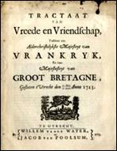
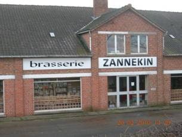
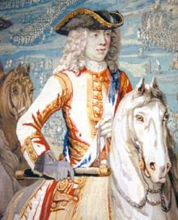
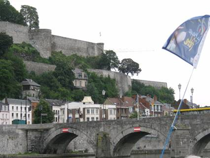
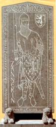
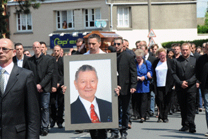

> nieuwsbrief
> 3e trimester
2013
| Bijdragen over: | Tip |
Hernieuwen
ledenbijdrage voor 2013
Uw
secretaris
is een tevreden man: de hernieuwing van de bijdragen verliep uitermate
vlot.
Ter herinnering: de ledenbijdrage voor 2013 beloopt voor het in mei al
verschenen
nieuwe Jaarboek De Nederlanden ‘extra
muros’ en voor de driemaandelijkse Nieuwsbrief
Zannekin
29 €. Vanaf 35 € wordt u met dank als steunend lid geboekt.
Herdenking
Vrede
van Utrecht
Naast de al eerder in onze Nieuwsbrief aangekondigde intiatieven in het kader van deze herdenking, valt er uiteraard ook te Utrecht een en ander te vermelden. We verwijzen hieronder alvast naar een paar evenementen:
- mededeling inzake een symposium over de Vrede van Utrecht dat eind april doorging: http://peaceofutrecht.hum.uu.nl/ ?page_id= 11A
-een boek aangekondigd boek met de om-schrijving wat drie jaar diplomatie in Utrecht betekende voor de stad. Zie:
http://www.historici.nl/Nieuws/Actueel/Vrede_van_Utrecht_21-3-2013
ZANNEKIN-JAARBOEK
De
Nederlanden “extra muros” - 35 - 2013
 Dit 35e Jaarboek De Nederlanden
‘extra muros’ biedt
weer
een breed spectrum aan bijdragen over de territoria die deel uitmaken
van ons
Nederlands nationale erfgoed.
Dit 35e Jaarboek De Nederlanden
‘extra muros’ biedt
weer
een breed spectrum aan bijdragen over de territoria die deel uitmaken
van ons
Nederlands nationale erfgoed.
Als steeds houden wij er aan het jaarboek in te leiden met de klassieke tekst waarin uiteengezet wordt waar het de Vereniging/Stichting Zannekin uiteindelijk om te doen is, en in welk perspectief wij ook ons jaarboek plaatsen.
De daarop volgende bijdragen hebben we zoveel als mogelijk chronologisch gerangschikt.
Op onze Studie-uitstap
2012 te Luik bracht
Over de Nederlandse
vrijheidsstrijd van de 16e eeuw
zijn al bibliotheken bijeengeschreven. Niettemin wist Willy
Alenus andermaal een nieuwe invalshoek te vinden in zijn (Las
Guerras de los Paises Bajos1568-1648).
In zijn De
kerkmeesters van de Sint-Aldegondekerk in Sint-Omaars schrijven in 1610
een
Nederlandse brief aan de Schepenen van de stad Gent wist
Amalia van Solms-Braunfels (1602-1675) is bij nader toezien geen “vreemde eend” in ons Nederlandse verleden. Renaat van Heusden wist haar daarin een terechte en markante plaats te geven.
1713: een bijdrage over
de Vrede van Utrecht van
driehonderd jaar terug mocht niet ontbreken. Met zijn Vrede
van Utrecht (1713), het einde van een bijna vergeten wereldoorlog
voldoet
Wanneer Geldern Pruisisch werd kreeg de Nederlandse streektaal het aldaar langzamerhand fel te verduren. En dit wel allereerst in het onderwijs. Hendrik Steeger schets in De laatste Nederlandstalige school in Pruisen het toenmalige lot van de school te Wetten.
Als resultaat van zijn
deelname aan een symposium
over “historie zonder grenzen” wist Marten
Heida precies méér te weten te komen over de Vastlegging
van de grens tussen Drenthe-Groningen en het Eemsland
krachtens het Meppener grenstraktaat van 1824.
Ook
Als chronologisch laatste scharnierpunt wordt aandacht gevraagd voor de taalgrenzen in de zuidelijke Nederlanden. In zijn 1963-2013: Vijftig jaar Vlaams-Waalse taalgrens doorheen Midden-België en de Germaans-Romaanse taalgrens in Oost-België besteedt Leo Camerlynck daar de nodige aandacht aan.
Uit de memoires die Cyriel Rousseeu kort voor zijn overlijden
neerschreef
putte de
jaarboekredactie merkwaardige gegevens over de allereerste ruimere
aandacht
vanuit de Nederlanden voor de Nederlanden extra muros over de
Frans-Belgische
grens. Daarbij gaat het Over Pro
Westlandia en Zannekin, zijnde een gelijkgerichte
vereniging die
aan onze
vereniging/stichting voorafging.
Afsluitend volgen ook nog de kroniekbijdragen en boekbesprekingen, waarvan Marten Heida andermaal het leeuwendeel voor zijn rekening nam.
____________________
De foto op de kaft van onze Nieuwsbrief
3/2012 stelt niet het
hotel-restaurant Zannekin
gelegen
op de Rodeberg in Heuvelland voor. Wel daarentegen de Brasserie Zannekin, gelegen aan de
Route de
Dun-kercque te Cassel over de ‘Schreve’.
In de gebouwen van dit pand is
overigens ook al sedert geruime tijd een boekenantiquariaat – de
Librairie Zannekin –
ondergebracht. Met dank aan
Mark Ingelaere voor deze rechtzetting.
De Kapelle
van
Sinte-Mulders,’n Iõngsje Hellege
en Prinsesse
In een schilderachtig dal
van het diepe Vlaanderen pronkt de uit 1702 stammende eenbeukige kapel
met een
torentje ter hoogte van het koor. De heilige Mildreda, “Sinte-Mulders”
in de
volksmond, wordt er vereerd. In dit
bedehuis in classicistische stijl
bevinden zich beeldjes van de heiligen Katharina en Agatha alsook
werken van de
Duinkerkse kunste-naar Bernard Pieters.
De Saksische prinses Mildreda, afkomstig van
het eiland Thanet aan de monding van de Theems, was één van de kinderen
van
koning en van zijn echtgenote Ermenberga, kleindochter van de eerste
christelijke koning van Engeland Ashelred, ook bekend als Ethelbert.Mildreda
verbleef in de abdij van Chelles,
nabij Meaux, ten oosten van Parijs. Daarna vervoegde ze de door haar
moeder
gestichte abdij van Minster- in- Thanet.Op weg naar haar geboorteland
liet ze een
kluis bouwen te Millam, een gehucht dat toen langs een inham van de
Noordzee
lag. Een legende verhaalt dat ze daar zou gewacht hebben tot de zee tot
rust
was ge-komen alvorens naar Engeland te varen, waar ze abdis werd. Ze
over-leed
er in 725.Sint-Mildreda wordt op 13 juli gevierd. Ze
wordt aangeroepen tegen moeraskoorts en wordt vereerd in het
Frans-Vlaamse
Millam en het West-Vlaamse Izenberge.
Op zaterdag
10 augustus 2013
wordt de onthulling van een gedenkbord
gepland te Millam met volgende programa:
10.30 uur: samenkomst aan
de Taverne Flamande te Millam.
Van daar te voet naar de
kapel alwaar religieuze plechtigheid in de kapel zelf.
Historische toelichting
over de kapel en van de Heilige Mildreda.
Inwijding van het
bord/paneel.
12.00 uur: Terug naar de
Taverne Flamande, alwaar aperitief en braai.
Vraag het definitieve
programma aan bij leo.camerlynck@sky,et.be
Malbroek of de Hertog van Marlborough in de Nederlanden

Tijdens mijn onderzoek naar de betekenis van John Churchill, de Hertog van Marlborough in het kader van de Spaanse successie-oorlog attendeerde iemand mij op de Kempische folklore, waar hij bekend staat als ‘Malbroek’.
De naam Malbroek is
duidelijk een
18e eeuwse verbastering van Marlborough en geen vertaling.
De oorsprong van deze
naam is
hoogst waarschijnlijk dan ook Frans. In de 18e eeuw werden er veel
volksliedjes
geschreven om de eigen zaak te bepleiten en de tegenstander te
bespotten. Eén
van die liedjes luidde Malbrough s'en
va-t-en
guerre, los
vertaald: Marlborough gaat ten oorlog varen.
Hier zien we de
verbastering van Marlborough in Malbrough. Bij de vertaling van dit
lied naar
het Nederlands werd de naam Malbrough op zijn beurt weer Malbroek.
Marlborough was zo’n
succesvol veldheer dat hij werd gevreesd onder Franse soldaten.
Tegenwoordig kent vrijwel
niemand nog het lied, maar de naam Mal-broek leeft nog wel in de
Kempische
folklore. In het handboek De algemene geschiedenis van Limburg
van
P.J.H. Ubachs (Uitgeverij Verloren 2000) lezen we op bladzijde 259 de
volgende
zinssneden:
“De
Fransen veroverden Luik, bivakkeerden langs de Maas en namen stelling
rond
Tongeren. De Pruisen namen Geldern in. De grote Engelse veldheer John
Churchill,
hertog van Marlborough, vertoefde herhaalde malen te Maastricht,
terwijl zijn
troepen op de Sint-Pietersberg bij Maastricht of in de Kempen
kampeerden.
Marl-borough bleef bij de geplaagde Kempenaren als ‘Malbroek’ te
kwa-der naam
en faam bekend.”
Als we de Kempische folklore nader bekijken dan kunnen we
inderdaad
stellen dat Marlborough niet bepaald geliefd was. Doorgaans wordt
Marlborough
herschapen als een stropop, die dan vervolgens wordt verbrand. Dit
gebruik
bestaat nog steeds in de Kempische plaatsen als Kessenich, Kinrooi en
Genk.
Ook elders in de Nederlanden bestaan sporen van Malbroek.
Zo is er in
Groningen een Malbroeksteeg, waarvan gespeculeerd wordt dat deze naar
Marlborough
is vernoemd, althans de verbastering.1
Zelfs in onvermoede grensgebieden van de Nederlanden
duikt Marl-borough
op. In het Lotharingse dorpje Manderen, tegenwoordig gele-gen nabij het
Frans-Duits-Luxemburgse drielandenpunt, staat het zoge-noemde ‘Château
de
Malbrouck’, dat eigenlijk Burg Meinsberg heet.
Manderen behoorde aanvankelijk bij Luxemburg.
Marlborough heeft hier in 1705 tijdelijk zijn
hoofdkwartier opgeslagen
voor een geplande invasie van Frankrijk via de Moeselvallei. Hij werd
echter
geconfronteerd met de Franse maarschalk De Villars en gebrek aan
bevoorrading,
waardoor hij zich moest terugtrekken. Sindsdien wordt het kasteel door
de
Fransen Château de Malbrouck genoemd.2
________________________
Noten:
1 http://groninganus.wordpress.com/2009/08/26/de-malbroeksteeg/
2 http://www.chateau-malbrouck.com/dispatch.do?sid=site/histoire_et_architecture/historique
WINTERBERG/LEER - De troonswisseling in Nederland was ook in Duitsland aanleiding voor feestgedruis. In Winterberg, een bij Neder-landers populair wintersportoord, was een groot tv-scherm opgesteld om de ceremonie in Amsterdam te kunnen volgen.
In Oost-Friesland, vlak over de grens bij Groningen, proostten Neder-landers en Duitsers samen op de nieuwe koning. In Bad Bentheim in de deelstaat Nedersaksen plantte de burgemeester een “konings-lindeboom” ter ere van Willem-Alexander.
Komiek Hape Kerkeling, die in 1991 veel opzien baarde met zijn Beatrix-imitatie, zei dat hij de voormalige koningin nooit meer zal nadoen.
_____________
Bron: www.telegraaf.nl
Vooruitblik op onze ZANNEKIN-Ontmoetingsdag te Namen
in het kader van
het
Vrede van
Utrecht 1713 en de Barrièrestad Namen en in samenwerking met de Orde
van den
Prince, op zaterdag 26 oktober
2013
Ontwerp van programma
[PM: het uiteindelijk
programma leest u in onze volgende Nieuwebrief]
Locatie:
Sprekers:
Namiddag:
rondleiding door de stad – Le Grognon, de kerk
Saint-Loup, de kathedraal, de Vleeshalle
Namur,
la citadelle
hollandaise
Auteurs: Philippe
Bragard, Vincent Bruch, Jacques Chainiaux, Denis Douette, Dominique
François,
Alex Furnémont, Jacky Marchal, Hugues Ravet.
Uitgever: Presses
universitaires de Namur - Les éditions namuroises.
Depuis 1986, parmi
les vingt-deux livres édités par notre association, nous avons publié
l'histoire de la citadelle, à l’usage premier des visiteurs du
monument. Parmi
les grandes étapes de son histoire et les différentes parties du site
fortifié,
le château des comtes, les souterrains, les travaux de Vauban, les
avatars de
la citadelle entre 1870 et 1940, les forts Brialmont ont été traités de
manière
plus détaillée. La première enveloppe bastionnée du XVIe siècle et
l’œuvre de
Menno van Coehoorn ont pour leur part fait l’objet d’articles dans le
Bulletin
périodique. L’histoire militaire a vu des ouvrages sur les sièges en
général,
et sur ceux de 1692 et de 1914 en particulier. Nous avons également
donné une
grosse synthèse sur les enceintes urbaines de Namur. Restent donc les
XVIIe et
XVIIIe siècles avec Terra Nova et les forts avancés pour la forteresse
‘fantôme’,
celle qui a presque entièrement disparu lors des démantèlements
successifs à la
charnière des XVIIIe et XIXe siècles, et surtout la citadelle visible
de nos
jours, résultat d’une reconstruction majeure entre 1816 et 1825.
Une forteresse
mosane de Wellington à Brialmont (1814-1878)
En effet,
quatre-vingt sinon nonante pour cents des murailles et des bâtiments
que l’on
voit datent de cette époque et résultent des travaux effectués par des
entrepreneurs namurois sur base de plans élaborés par des ingénieurs
hollandais
d’après les idées d’un grand général anglais, le tout influencé par des
théories françaises. C’est une forteresse du premier quart du XIXe
siècle qui
dresse ses remparts sur l’éperon venant mourir au confluent de
Alle
practische info leest u in onze volgende
Nieuwsbrief.
 De Namense citadel
De
“Silverijser” - Geschiedenis
van
Herk-de-Stad (deel IV)
1
Willy Alenus,
Oostende
De geschiedenis van
het stadhuis en de
dekenij
Na de
brand van 1679 werd het stadhuis in het midden van de markt gelegen
niet meer
heropgebouwd. Waar de schepenbank haar zittingen naderhand hield, is
niet
geweten. Nadat met ingang van de Franse tijd de gemeenteraden2
waren
ingesteld, vergaderde die van Herk in een herberg. In zitting van 24
november
1832 besloot de gemeenteraad twee huizen aan te kopen die gelegen waren
op de
Grote Markt en die toe-behoorden aan de heer Diepers
uit Diepenbeek.
Die
huizen hadden waarschijnlijk de plaats ingenomen van het oud-pand “De
Zwaan”.
De waarde van het goed werd geschat door de metser Santermans en door de
timmerman Peeters. De
schatters schrijven in hun verslag dat de huizen
met een grote tuin een oppervlakte be-sloegen van 17 vierkante roeden =
5a 80
ca.3 In de aangeduide opper-vlakte zullen ze die van de tuin
niet
meegerekend hebben. Immers vol-gens het kadaster van 1845 besloegen de
gebouwen
alleen een oppervlakte van
De
aangeduide grenzen bewijzen eens te meer dat de tuin door de schatters,
ter
gelegenheid van hun schatting, niet meegerekend werd. Want de twee
huizen
grensden niet aan het goed van Joannes Haesen,
maar wel aan de tuin. Met “de stadsvelden” zal het achterste gedeelte
van de
tuin der huidige dekenij bedoeld zijn.
Op 16
februari 1867 besluit de gemeenteraad tot de aankoop van de oude
pastorie,
waarvan de gemeente reeds het genot bezat.5 De pastorie
besloeg een
oppervlakte van 2 aren en de tuin een van
Vervolgens
sluit de gemeenteraad een overeenkomst met Petrus Hae-sen waarbij deze laatste
een strook grond afstaat,
Op 1
maart 1866 werd aan de heer Jaminé,
provinciaal opziener van de gebouwen, opdracht gegeven plannen op te
maken voor
het bouwen van een gerechtszaal met erboven een raadszaal voor de
gemeenteraad,
een gemeenteschool en een onderwijzerswoning.
De
plannen dragen het jaartal 1872. De werken werden uitgevoerd in de
jaren
1870-1873. De gebouwen hebben 38.333,88 francs gekost en zijn diegene
die thans
nog bestaan. Ze hebben niet de minste stijl en zijn de hoofdplaats van
het
kanton onwaardig (Silverijser).
We
hebben trachten na te gaan hoe het pand “De Zwaan” in het bezit gekomen
is van
de heer Diepers. Wij
zijn er niet
in geslaagd, want er doen zich leemten voor in de reeks van
opeenvolgende
eigenaars. We weten alvast dat door zijn mede-erfgenamen, aan Willem Angst, die gehuwd was met
Maria Cingers, dochter
van Jan Clingers en Anna
Cluijtinx, het goed
verkocht werd op 5 december 1611. Voorts
wordt “De Zwaan” op 23 oktober 1673 openbaar te koop gesteld door Jan
Christiaan
Raijmond. De koper was
Martinus Wintmolders.
Deze doet er afstand van op
26 april 1677 ten voordele van de schuldeisers. Burgemeester Jan Coenen koopt dan het huis. Op
17 juni
1680 legt de kerkraad van Herk beslag op “De Zwaan”, dat op dat
ogenblik eigen-dom
was van de erfgenamen van Petrus Neven.
De oorzaak ervan zal waarschijnlijk geweest zijn dat de eigenaars de
rente niet
meer betaal-den, die zij verschuldigd waren aan de Kerk. Joannes Clingers had in zijn testament
bepaald,
dat er jaarlijks 12 stuivers moesten betaald wor-den aan de
kerkfabriek, te
heffen om zijn voornaamste eigendom “De Zwaan”.
In 1677
bestond het kleine huis tussen de pastorie en “De Zwaan” nog. Want op
13
september van dat jaar doet de E.H. Joannes Vanulf,
pas-toor alhier, beslag leggen op dat huisje, omdat de toenmalige
eigenares,
Maria de Motte, een
bepaalde
overeenkomst verbroken had. (onlees-baar). Bij de grote brand van 1679
werden
al de huizen aan de zuidzijde van de Grote Markt de prooi der vlammen.
(Wordt
voortgezet)
Noten
__________________
1
2 De
gemeenteraden werden ingesteld tijdens de Franse overheersing, maar ze
hadden
toen weinig in de pap te brokken. In Frankrijk wordt (werd) alles in
Parijs
geregeld, tot en met de invoering van de “régions”. Pas met de start
van het
tijdperk van de Verenigde Nederlanden konden zij hun grondwettelijke
macht
uitoefenen.
3 Een
kleine vierkante roede is gelijk aan
4 Ten
tijde van de Verenigde Nederlanden (1815-1830,
5 De
kerkelijke goederen waren door de Franse revolutionairen in beslag
ge-nomen
(1795) en in de meeste gevallen verkocht. In de volksmond “Zwart goed”
genaamd.
Daar anderzijds de gemeente nu moest instaan voor de huisvesting (en
het
onderhoud?) van de pastoor, zullen zij, in het geval van Herk, de
pastorie niet
verkocht hebben, maar aan de gemeente hebben geschon-
ken.
Dixit Silverijser.
6 Wat
van de archieven van Wuestherck, vandaag Herk-de-Stad, is bewaard
gebleven is,
in detail, terug te vinden in, Rombout Nijsen,
Inventarissen van de Schepenbank van
Herk-de-Stad, etc., RAH, Inventarissen, 36, Algemeen Rijksarchief,
Brussel,
1999, 132 pp.
Onder de vele ‘items’ die over
de figuur van ‘Zannekin’
op internet na
te slaan zijn, circuleert ook onderstaand lemma in een soort dialect
dat
allicht voor ‘Frans-Vlaams’ moet doorgaan.
De
vraag of dit dialectische Nederlands – een taalvorm die nooit een
geschreven
traditie verworven heeft - ook dient onderwezen te worden, vertrekt
o.i. van
uit een foute premisse: wie aansluiting zoekt met de Nederlandse
cultuur en
geschie-denis vindt meer baat bij het Algemeen Nederlands.
Dat
dit soort dialectcursussen tegenwoordig door de Franse staat
gesubsidieerd
worden – onder het mom dat het ‘Vlaams’ een regionale taal is binnen
Frankrijk,
terwijl het Nederlands als’ vreemde’ taal beschouwd wordt, spreekt
boekdelen
over de officiële Franse mentaliteit.
‘Memorial
voe Nicolaas Zannekin
an de kerke van Lampernisse’
Nicolaas
(Klaas) Zannekin (°Lampernisse,
† Kassel
23 ogustus
1328) wos
e
landeigenoare uut de Kuststreke die voerol bekend ekommn is in de Boerenopstand
(1323-1328).
|
Zannekin is ebôorn in de streke va Lampernisse in 't latste decennium van 'n 13stn êeuw. E wos eigenoare va zyn landbouwground en dus kunn we zeggn dat 'n redelik welstellnd wos. We weetn ni juste woar-om, moar op e zeker moment wos 'n verbann na Brugge. Toen da ze ge-bôortestreke Kust-Vloandern in opstand kwam, keerde Zannekin - die populair wos by 't geweune volk - were na Lampernisse. Zannekin adde e speciale positie: e wos pôorter van Brugge en eigenoare in Lam-pernisse. Da makte van em e schoakel tussen 't steej en 't platteland. |
De reedn van de opstand va
Kust-Vloandern
tegen Lodewyk II
van Névers, groaf van Vloandern e leenman van de keunienk va
Vrankryk,
is redelik ingewikkeld. Voe de Bruggeliengn wos 't zuver polletiek. Ze woarn
benauwd da Lodewijk nunder stadsprivileges gienk vermien-dern. Oek de slichte economie speelt
e rolle.
In 1316 wos 't er een oun-gersnôod ewist, en de joarn die d'rop volgden
woarn
ol ni vele beter. Telt doaby nog e kè 't Verdrag van
Athis-sur-Orge
(1305) mè ze zwoare lastn voe Vloandern; voerol voelboar voe de
middnklasse.
Zannekin adde utendelik round
de 15.000
man verzoameld. Ze leger krêeg de noame "Keirels". 'n Bekendstn wos
Zeger Janszoone. De mêeste Keirels woarn afkomstig uut de Kasselrijen
Veurne,
Sint-Winoksbergen, Bourbourg, Kassel en Belle. Op 23 ogustus 1328
vochte dat
leger tegen 't Fransche leger an de voet van 'n Kasselberg.
De Keunienk wos benauwd voer e twiddn Guldnspôornslag.
Doarom wos ze leger deze kir vele sterker: 2500 zwoar gewoapende
ridders en
12.000 man lichte infanterie.
Achter dien Slag kwam de arde
repressje
op gank: hêelder dorpn round Rysel en
Kassel woarn uutemôord op bevel van 'n keunienk va
Vrankryk.
Sedert Conscience en andere
schryvers uut
'n 19stn êeuw, is de figure van Zannekin geromantiseerd en lichtelik
anders
bekeekn. Da wilt ni zeggn dan d'r absoluut gèn Vlams-nationalistische
reedns
woarn woar-om da de Boerenopstand gebeurde. Moa 't wos voerol toch
sociaal-polletiek, amme de kroniekschryvers toet diepe in 'n 18stn êeuw
meugn
geloovn.
Sagen en legenden uit Vlaanderen, van F.R. Boschvogel
De Kerels van Vlaanderen, van Hendrik Conscience
_____________
Overgenomen van: http://vls.wikipedia.org/w/index.php?title=Klaas_Zannekin&oldid=257610
Marten
Heida
Een
verrassende ontdekking
In de loop van de 14e en 15e eeuw rolt het Saksisch als een golf uit over onder meer de Groningse Ommelanden. Let wel: de Ommelanden, dus zonder de stad Groningen; deze is ontstaan uit een op de noordelijke uitlopers van de Hondsrug gelegen Drents dorp. Deze Ommelanden maakten deel uit van de Friese landen. Vandaar dat de oude documenten ook in de Friese taal van toen opgesteld zijn. Tussen haakjes: aan dat Friese verleden herinnert ook het Wilhelmus; in het vierde couplet is sprake van Graaf Adolf die in Friesland in de slag gebleven is. Klinkt in deze aardrijkskundige aanduiding een nagalm door aan de tijd dat de gedoodverfde dichter - Marnix van St.-Aldegonde - als politiek vluchteling tijdelijk verbleef op de Lütetsburg te Hage in Oost-Friesland en pleit deze vermelding niet voor zijn dichterschap van het Neder-landse volkslied?
Echter als gevolg van
de
Saksische golf krijgt de taal gaandeweg een andere kleur.
In oktober 2008 is de in deze streektaal vertaalde Bijbel van de pers gekomen. Naar protestants gebruik besluit ik elke maaltijd met het lezen van een Bijbelgedeelte. Sinds april 2009 doe ik dat uit de Gröninger Biebel. Tot mijn grote verrassing krijg ik regelmatig woorden onder ogen die mij als Friestalige bekend in de oren klinken.
Zoals in een landschap het oorspronkelijke kan zijn weggeërodeerd op enkele uitzonderingen na - ik denk in dit verband aan de “bergen” in Frans-Vlaanderen - zo is het ook gebeurd met het Fries in de Groningse Ommelanden. De bewaard gebleven uitzonderingen hebben hier en daar wel een Saksisch kleurtje gekregen, maar het oorspronkelijke taalkleed is nog duidelijk te herkennen.
“Stief”
zowel in Frans-Vlaanderen als in Groningen
Om zeker te zijn dat ik
toen
mijn gesprekspartner goed verstaan heb, heb ik er toch maar even het Woordenboek van het Frans-Vlaams van
Zoals ik onder het
vorige kopje
al heb laten weten lees ik momenteel uit de Gröninger
Biebel. Wie schetst nïijn verbazing dat ik daarin hetzelfde
woordgebruik
met dezelfde betekenis ben tegengekomen. In 2 Korinte 9 vers 18b staat
te
lezen: “Je maggen God ter wel stief veur bedanken”.
Marten Heida
Prins Willem Alexanderpark 53,
NL 3905CB Veenendaal
Zannekin-Onmoetingsdag
te Namen
In het najaar, meer bepaald op zaterdag
26 oktober 2013, vindt de ontmoetingsdag plaats in de Citadelstad
Namen met
een bezoek aan o.a. het Bastion des Hollandais of Terra Nova, de Pont
des
Hollandais, sporen uit een Nederlands verleden. In een later nummer
verneemt u
hierover meer.
Oprichting van
het netwerk "Initiatief voor het Nederlands" in
de Euro-metropool Rijsel-Kortrijk-Doornik
Tijdens de
maanden mei en juni 2013 hadden respectievelijk te Belle en
Rijsel twee druk bijgewoonde vergaderingen plaats in verband met de
bevordering
van het Nederlands in Frans-Vlaanderen en in het “Wallonie Picarde”, de
streek
rond Doornik. Doordat het initiatief gesteund wordt door de Eurométropole/Eurometropool
Lille-Kortrijk-Tournai bekleedt dit waardevol initiatief een
officieel
karakter.
Onder de
aanwezigen waren hoogleraren en verantwoordelijken van de
volwassensopleiding aan Université Charles de Gaulle-Lille 3,
vertegen-woordigers van het Huis van het Nederlands te Belle (Maison du
Néerlandais de Bailleul), leden van de Association des Professeurs de
Néerlandais de l'Enseignement Secondaire, leden van het Forum
Euro-metropool
Lille-Kortrijk-Tournai, Nederlandsleerkrachten, naast bur-gers van het
middenveld. In hun mediabericht, dat ruimschoots werd verspreid, staat
onder
meer het volgende te lezen:
“
Aangezien de
volwaardige erkenning van de Andere de erkenning van zijn
taal vereist, verklaren zij hiermee het volgende na te streven:
-
Een grotere
steun voor wie het Nederlands leert, taal van 23 miljoen sprekers in
Europa
(België en Nederland).
-
De
erkenning van het Nederlands als een taal die regionaal gezien van
strategisch
belang is wegens de culturele, economische en sociale uitdagingen en de
behoeften van uitwisseling, samenwerking en mobiliteit met Vlaanderen
(België)
en Nederland. Deze buurlanden beschikken over een erkende knowhow in
creatie,
design, bouwkunst, stedenbouwkunde, ondernemerschap, stedelijke
mobiliteit,
scheepsbouw, maritiem vervoer, haven- en kustengineering, mari-tiem
risicobeheer, maar ook in literatuur, dans, filmkunst, schilderkunst,
muziek...
-
De creatie
van een plek met taalkundige en culturele mogelijkheden, een plaats
voor
ontmoetingen, debatten en tentoonstellingen over de taal en cultuur van
de
Nederlandstalige landen.”
De metropool
Rijsel, hoofdstad van Frans-Vlaanderen, zou hiervoor een
geloofwaardige en legitieme locatie zijn vanwege haar centrale rol in
de
grensoverschrijdende samenwerking, haar historische status als stad van
de oude
Nederlanden en haar dynamisch cultuurbeleid dat voor een vernieuwde
aantrekkelijkheid heeft gezorgd.
Er wordt
gestreefd naar een samen- en medewerking aan een kwalitatief
hoogstaand opleidingsaanbod, een bredere samenwerking tussen
instel-lingen en
tussen leerkrachten, een betere geografische verspreiding van onderwijs
voor
beginners en dag- en avondlessen en ten slotte, een be-tere omgeving
voor alle
leerlingen en alle leerkrachten.
Wie meer over dit
prachtinitiatief wil vernemen, neemt best contact op
met amisduneerlandais@voila.fr
Bord wordt onthuld
een de Sinte-Mulderskapel te Millam
Elders in dit nummer vindt u informatie over
de inwijding van een bord met uitleg over de Sinte-Mulderskapel en over
de
Heilige Mildreda zelf in het wondermooie Frans-Vlaamse Millam. De
Stichting
Zannekin,
het
Forum van
Vlaamse Vrouwen
en euvo
slaan de handen
in mekaar
en bundelen de krachten.
Wij hopen u daar talrijk te mogen ontmoeten.
Aangezien bij het uitgeven van dit nmmer het programma nog niet
helemaal
vastlag, informeer u best op het nummet 00 32 485 630 227 of op het
e-postadres
leo.camerlynck@skynet.be
Frans-Vlaanderen
rouwt
Roger
Gouvart ging heen, een bladzijde van de
geschiedenis van Cappelle-la-Grande wordt omgedraaid. Nauwelijks
veertien dagen
nadat een monument van Frans-Vlaanderen, Rijsels socialistisch
burgemeester en
oud-premier Pierre Mauroy, overleed, ging de communistische
bur-gemeester van
Cappelle-la-Grande, Roger Gouvart, ook van ons heen. Cappelle-la-Grande
rouwt.
Roger Gouvart sukkelde sinds september 2012 met zijn gezondheid. Hij
overleed
op 20 juli 2013 op de leeftijd van 84 jaar. De Vlaamse Peppone, zoals
hij ook
bekend stond, drukte zijn stempel op “zijn” Vlaamse gemeente. Deze
sociaal
sterk geëngageerde burgemeester stond bekend om zijn spraakwaterval,
zijn
zachte ironie, zijn oeverloze inzet in het sociale en culturele leven.
Met ettelijke honderden aanwezigen waren zij op de
begrafenis-plechtigheid
van 25 juni

Foto
uitvaartplechtigheid van Roger
Gouvart
Op zijn stedelijk palmares staan heel wat grote en zelfs
grootse
verwezenlijkingen zoals de sociaal-culturele centra en vooral het
planetarium
van het Palais de l’Univers, waar alles mede dankzij hem keurig in het
Frans,
Nederlands en Engels verloopt.
Roger werd te Rosendael bij Duinkerke geboren in 1928.
Zijn vader Victor
Gouvart was dokwerker en zijn Lisa Riem stamde uit Poperinge in
West-Vlaanderen.
Na WO II knoopt hij een hechte vriendschap aan met de
sociaal geënga-geerde
priester André Delepouille, een fervent aanhanger van Kardinaal Jozef
Cardijn.
Roger Gouvart kiest evenwel voor de communistische vakbond CGT. Hij
gaat aan de
slag bij de Duinkerkse scheepswerven als tekenaar-traceerder en
incidenteel als
dokwerker.
Hij trouwt met Eliane en het gezin telt vijf kinderen.
Roger houdt van
bioscoopbezoeken en van lectuur zoals de boeken van Emile Zola en
Victor Hugo.
Op 25-jarige leeftijd wordt hij in 1953 het jongste gemeen-teraadslid
van
Frankrijk. In 1983 werd hij burgemeester van Cappele-la-Grande, de
gemeente
waarover hij dertig jaar lang de scepter zwaaide met een volstrekte
meerderheid. Ondertussen bleef hij onder de dokwerkers en de arbeiders
op de
scheepswerven sociaal actief. Tevens
hervormde hij de havenstructuur van Duinkerke.
‘
Roger Gouvart noemde zichzelf ”un
Flamand pur sang”, die een felle
verdediger was van de Nederlandse standaardtaal en die tegelijk gekant
was
tegen de bevordering van het Vlaemsch. “C’est le Néerlandais qu’il faut promouvoir et
pas un quelconque dialecte. La promotion du Flamand est une manœuvre de
l’état
jacobin pour semer la discorde au sein de notre chère Flandre”, vertrouwde
hij mij in 2012 toe.
Elk jaar was Roger
Gouvart trouw aanwezig op de
opening van de Frans-Vlaamse dagen te Nieuwpoort. Beste Roger, we zullen je missen!
Leo
N.J. Camerlynck,
voorzitter Stichting Zannekin
De
Zavelberg, Edouard
Michielsstraat 51
B – 1180 UKKEL/Brussel
Tel. 00 32 485 630 227